토양환경기사 (2015-03-08 기출문제)
1과목: 토양학개론
1. 토양수분 중 모세관수의 장력(pF) 범위로 옳은 것은?
- pF 2.54 이하
- pF 2.54~4.5
- pF 4.5~7.0
- pF 7.0 이상
(정답률: 88%)

2. 토양공기의 조성에 관한 설명 중 틀린 것은?
- 대기에 비하여 CO2의 함량이 높음
- 대기에 비하여 O2의 함량의 변동이 적음
- 대기에 비하여 토양 중 습도 함량이 높음
- O2는 식물의 뿌리와 토양생물의 호흡에 의하여 소비됨
(정답률: 82%)
3. 토양으로 가득채운 관(column)의 두 지점 사이에 지하수가 흐른다고 했을 때, 토양층을 흐르는 유량에 반비례하는 것은? (단, Darcy's law 기준)
- 수리전도도(hydrauilc conductivity)
- 두 지점 사이의 수두 차
- 두 지점 사이의 거리
- 관의 단면적
(정답률: 75%)
4. 토양의 양이온 교환 작용(흡착)과 관련된 설명 중 틀린 것은?
- 일반적으로 양이온교환반응은 화학량론적으로 일어난다.
- 일반적으로 양이온교환반응은 가역적인 반응이다.
- 토양에 흡착되어 있는 양이온은 주로 Al3+, Fe2+, Mn2+이다.
- 양이온의 흡착의 세기는 양이온의 수화반지름이 작을수록 증가한다.
(정답률: 56%)
5. 토양수분은 식물학적 견지에서 볼 때 과잉, 유효, 무효수분으로 나눌 수 있다. 다음 중 과잉수분에 관한 설명으로 옳지 않은 것은?
- 토양 내 염류 용탈을 저해한다.
- 식물의 생장에 유해하다.
- 통기를 막아 질소고정 및 암모니아화를 일으키는 호기성 세균의 활성을 저해한다.
- 주로 중력수에 해당한다.
(정답률: 60%)
6. 토양의 입도분석 결과 입도분포 곡선으로부터 D10=0.06mm, D30=0.16mm, D60=0.53mm로 측정되었다. 이 때 곡률계수는?
- 0.51
- 0.61
- 0.71
- 0.81
(정답률: 79%)
7. 물에 의한 토양침식의 진행 정도에 따른 분류와 가장 거리가 먼 것은?
- 주상 침식
- 면상 침식
- 세류 침식
- 협곡 침식
(정답률: 67%)
8. 포화대의 수리지질학적 특성 중 저유(Storage)특성의 주요 인자와 가장 거리가 먼 것은?
- 수리전도도(hycraulic conductivity)
- 비저유계수(specific storage coefficient)
- 저유계수(storage coefficient)
- 비산출률(specific yield)
(정답률: 68%)
9. 모래에 지하수를 장기간 중력 배수시켰을 때, 모래의 비산출률이 0.15이고 모래의 공극율이 0.53이라면 비보유율은?
- 0.68
- 0.08
- 0.29
- 0.38
(정답률: 84%)
10. 토양오염의 특징으로 틀린 것은?
- 오염경로의 단순성
- 오염이 비인지성 및 타 환경인자와의 영향관계의 모호성
- 수질 또는 대기오염에 비해 오염 영향의 국지성
- 피해발현의 완만성
(정답률: 89%)
11. 지하수의 비전도도와 전기전도도에 관한 내용으로 옳지 않은 것은?(오류 신고가 접수된 문제입니다. 반드시 정답과 해설을 확인하시기 바랍니다.)
- 전기전도도는 1개 물질이 전류를 흐르게 하는 능력을 나타내는 단위이다.
- 비전도도는 특정온도하에서 단위길이나 단위단면적을 갖는 물체의 전기전도도를 나타내는 단위이다.
- 지하수내에 이온이 많을수록 전기저항이 감소되고 전기전도도는 증가한다.
- 정확한 의미로 전기전도도는 체적전기전도도와 동의어이며 체적저항의 제곱에 비례한다.
(정답률: 74%)
12. 점토광물의 표면전하에 관한 설명으로 가장 적합한 것은?
- 일반적으로 점토광물이나 유기물은 양전하에 비해 음전하를 절대적으로 많이 가지므로 토양은 순 음전하를 띤다.
- 영구전하는 토양의 pH의 영향을 많이 받는다.
- pH가 낮은 조건에서는 음전하가 생성되는 반면, pH가 높은 조건에서는 과량의 양전하가 생성되는데 이와 같은 전하를 통틀어서 가변전하라 한다.
- 점토광물을 분쇄하여 분말도를 높이면 양전하가 많아진다.
(정답률: 66%)
13. 토양의 습윤단위중량이 1.75t/m3이고, 함수비가 25%일 때 토양의 공극율(%)은? (단, 토양입자의 비중은 2.65)
- 38.9%
- 47.2%
- 52.2%
- 58.1%
(정답률: 58%)
14. 다음 중 주수대수층(perched aquifer)의 설명으로 가장 알맞은 것은?
- 렌즈형태의 불투수성층에 의해 아래로 이동할 수 없어 소규모의 포화된 지하수층이 형성 된 것
- 지하수를 저장할 수 있으며 대수층으로 천천히 이동시킬 수 있는 것
- 어떠한 물도 이동시킬 수 없는 절대적인 불투수성층
- 지표면으로부터 대수층 바닥까지 고유투수계수가 높은 층
(정답률: 80%)
15. 토양 중 존재하는 이온들의 수화이온 크기 순서로 옳은 것은? (단, 농도와 온도 등 기타 조건은 같다고 가정함)
- Li＞Na＞K＞Rb
- Li＞K＞Na＞Rb
- Na＞Li＞K＞Rb
- Na＞K＞Li＞Rb
(정답률: 69%)
16. 어떤 토양의 양이온 교환용량이 17.5cmolc/kg, 그 중 Al과 H이온이 총 5.2cmolc/kg 존재할 때 염기포화도(%)는?
- 29.7
- 40.3
- 55.9
- 70.3
(정답률: 75%)
17. 토양의 공극률이 0.4이고, 용적밀도가 1.6g/cm3이다. 이 토양을 다진 후 공극율이 0.3으로 감소되었다면 용적밀도(g/cm3)는?
- 1.65
- 1.72
- 1.79
- 1.87
(정답률: 59%)
18. “습윤, 낮은 온도, 침엽수림, 조립질, 산성토양” 조건하에서 토양표층의 토양표층의 철과 알루미늄 등이 용탈되어 생긴 회백색의 표백층과 그 밑에 털과 알루미늄이 집적되어 생긴 흑갈색 또는 적갈색의 집적층을 갖는 토양생성과정은?
- 염류화 작용(salinization)
- 글레이화 직용(gleization)
- 라테라이트화 작용(laterization)
- 포드졸화 작용(podzolization)
(정답률: 80%)
19. 토양지하수오염으로 인해 그 지역에 거주한 주민들에게 피부병, 심장질환, 뇌종양, 지제장애, 기형아 출산 등 각종 질병이 나타난 사건은?
- 러브캐널 사건
- 도르나 사건
- 뮤즈 계곡 사건
- 포자리카 사건
(정답률: 90%)
20. 점토광물 중 lllite에 관한 내용으로 틀린 것은?
- Vermiculite와 같이 2:1의 층상구조를 가진다.
- 습윤상태에서 팽창이 불가능하다.
- 토양 중에 흔히 존재하는 점토광물로서 K+ 함량이 퇴적물이 적은 조건하에서 변성작용을 받을 때 형성되는 것으로 알려져 있다.
- 운모에 비하여 K+ 함량이 높아 Hydrous mica로 불린다.
(정답률: 73%)
2과목: 토양 및 지하수 오염조사기술
21. 토양 중 수분함량 측정에 관한 설명으로 옳지 않은 것은?
- 토양 중 수분을 0.01%까지 측정한다.
- 돌, 나무 등 눈에 보이는 협잡물 등은 제거한 후 시험해야 한다.
- 시료를 1⑤~110%의 건조기 안에서 4시간 이상 항량이 될 때까지 건조한다.
- 채취된 시료는 24시간 이내에 증발 처리하여야 한다.
(정답률: 87%)
22. 다음은 비소-수소화물생성-원자흡수분광광도법에 관한 설명이다. ( )안에 알맞은 것은?
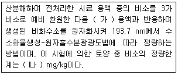
- 가 : 수소화주석나트륨, 나 : 0.1
- 가 : 수소화붕소나트륨, 나 : 0.1
- 가 : 수소화주석나트륨, 나 : 0.01
- 가 : 수소화붕소나트륨, 나 : 0.01
(정답률: 76%)
23. 총칙 내용 중 누출검사대상시설에 대한 용어 설명으로 틀린 것은?
- 부속배관 : 누충검사대상시설에 용접 또는 나사조임방식으로 직접 연결되는 배관을 말한다.
- 지하매설배관 : 부속배관의 경로 중 지하에 매설되어 누출여부를 육안으로 직접 확인할 수 없는 배관을 말한다.
- 배관접속부 : 누출검사대상시설과 부속배관, 부속배관과 배관을 연결하기 위하여 용접접합 또는 나사조임방식 등으로 접속한 부분을 말한다.
- 누출검지관 : 기체의 누출여부를 누출여부를 누출검사대상시설 외부에서 직접 또는 간접적으로 확인하기 위해 설치한 관을 말한다.
(정답률: 83%)
24. 저장물이 있는 누출검사대상시설(기상부의 시험법)의 판정기준으로 옳은 것은?
- 미가압 시험결과, 누출검사대상시설내의 압력강하량이 3mmH2O를 초과하면 불합격으로 한다.
- 미가압 시험결과, 누출검사대상시설내의 압력강하량이 6mmH2O를 초과하면 불합격으로 한다.
- 미가압 시험결과, 누출검사대상시설내의 압력강하량이 9mmH2O를 초과하면 불합격으로 한다.
- 미가압 시험결과, 누출검사대상시설내의 압력강하량이 12mmH2O를 초과하면 불합격으로 한다.
(정답률: 84%)
25. “밀폐용기”에 관한 정의로 가장 적합한 것은?
- 취급 또는 저장하는 동안에 이물질이 들어가거나 또는 내용물이 손실되지 아니하도록 보호하는 용기를 말한다.
- 취급 또는 저장하는 동안에 밖으로부터의 공기 또는 다른 가스가 침입하지 아니하도록 내용물을 보호하는 용기를 말한다.
- 취급 또는 저장하는 동안에 기체 또는 미생물이 침입하지 아니하도록 내용물을 보호하는 용기를 말한다.
- 취급 또는 저장하는 동안에 내용물이 광화학적 변화를 일으키지 아니하도록 방지할 수 있는 용기를 말한다.
(정답률: 87%)
26. 다음은 벤젠, 톨루엔, 에틸벤젠, 크실렌(퍼지-트랩기체크로마토그래피)측정에 관한 내용이다. ( )안에 옳은 내용은?
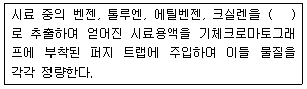
- 메틸알코올
- 에틸알코올
- 클로로폼
- 사염화탄소
(정답률: 86%)
27. 저장물질이 있는 누출검사 대상시설-기상부의 시험법인 미가압법 측정방법에 관한 설명으로 옳지 않은 것은?
- 가압 후 15분 이상 유지시간을 두어 안정시키고 그 이후 15분 동안의 압력강하를 측정한다.
- 가압 중에 노출되어 있는 배관접속부 등에 비눗물 등을 뿌려 노출여부를 확인하여야 한다.
- 가압속도는 누출검사대상시설 공간용적 1m3당 1분 이상이 되도록 가압시간을 조정한다.
- 누출검사대상시설내 기상부 높이가 200mm 이상인가를 확인한 후 가압한다.
(정답률: 80%)
28. 다음 용어에 대한 설명으로 옳지 않은 것은?
- 가스체의 농도는 표준상태(0℃, 1기압, 상대습도 0%)로 환산표시한다.
- 방울수라 함은 20℃에서 정제수 20방울을 적하할 때, 그 부피가 약 1mL가 되는 것을 뜻한다.
- 진공(감압)이라 함은 따로 규정이 없는 한 15mmH2O 이하를 말한다.
- ‘약’이라 함은 기재된 양에 대하여 ±10% 이상의 차가 있어서는 안된다.
(정답률: 92%)
29. 기체크로마토그래피를 이용하여 PCBs를 분석할 때 간섭물질에 관한 내용으로 틀린 것은?
- 고순도의 시약이나 용매를 사용하여 방해물질을 최소화하여야 한다.
- 초자류는 사용 전에 아세톤, 분석 용매순으로 각각 3회세정한 후 건조시킨 것을 사용하여 오염을 최소화할 수 있다.
- 전자포착검출기를 사용하여 PCB를 측정할 때 프탈레이트가 방해할 수 있는데 이를 플라스틱 용기를 사용하지 않음으로서 최소화할 수 있다.
- 플로리실 컬럼 정제는 산, 염화페놀, 폴리클로로페녹시페놀 등의 극성화합물을 제거하기 위하여 수행하며, 사용 전에 정제하고 활성화시켜야 한다.
(정답률: 61%)
30. 다음 중 pH 값이 20℃에서 가장 낮은 값을 나태나는 pH표준액은?
- 수산화칼슘 표준액
- 탄산염 표준액
- 인산염 표준액
- 붕산염 표준액
(정답률: 79%)
31. 6가 크롬을 자외선/가시선 분광법으로 분석하는 방법에 관한 설명으로 옳지 않은 것은?
- 이 방법에 의한 토양 중 6가 크롬의 정량한계는 0.5mg/kg이다.
- 6가 크롬을 디페닐카르바지드와 반응시켜 생성하는 적자색의 착화합물의 흡광도를 540nm에서 측정하여 6가 크롬을 정량하는 방법이다.
- 시료 중 철이 2.5mg 이하로 공존할 경우에는 디페닐카바지드 용액을 넣기 전에 5% 피로인산나트륨-10수화물 용액 2mL를 넣어 주면 영향이 없다.
- 시료 중에 잔류염소가 공존하는 경우에는 시료에 수산화나트륨용액(20%)을 넣어 pH 10정도로 조절한 후 활성탄을 10% 정도 넣고 자석교반기로 약 20분 이상 교반하여 여과한 액을 시료로 사용한다.
(정답률: 54%)
32. 6가 크롬 분석을 위해 사용되는 이온크로마토그래피-자외선/가시선 분광계의 구성순서로 옳은 것은?
- 액송펌프→용리액 저장조→시료주입부→분리컬럼→PCB→UV/VIS 검출기→기록계
- 용리액 저장조→액송펌프→시료주입부→분리컬럼→PCB→UV/VIS 검출기→기록계
- 용리액 저장조→시료주입부→액송펌프→분리컬럼→PCB→UV/VIS 검출기→기록계
- 용리액 저장조→시료주입부→불리컬럼→액송펌프→PCB→UV/VIS 검출기→기록계
(정답률: 77%)
33. 저장물질이 없는 누출검사대상시설의 가압시험법에서 안정된 시험압력이 되기 위한 가압 후 유지시간과 시험압력에서 압력강하율의 조건으로 옳은 것은?
- 10분-10%이하
- 15분-15%이하
- 20분-10%이하
- 30분-15%이하
(정답률: 69%)
34. 금속류를 원자흡수분광광도법으로 측정시 정확도에 관한 내용으로 가장 적합한 것은?
- 정확도는 첨가한 표준물질의 농도에 대한 측정 평균값의 상대 백분율로서 나타내고 그 값이 70~130% 이내이어야 한다.
- 정확도는 첨가한 표준물질의 농도에 대한 측정 평균값의 상대 백분율로서 나타내고 그 값이 75~125% 이내이어야 한다.
- 정확도는 측정값의 상대표준편차를 산출하며 그 값이 25% 이내이어야 한다.
- 정확도는 측정값의 상대표준편차를 산출하며 그 값이 30% 이내이어야 한다
(정답률: 80%)
35. 토양 시료의 수분 측정시험 결과로 다음과 같은 자료를 얻었다. 이때 수분함량은?
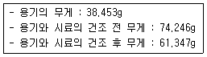
- 33.7%
- 36.0%
- 41.9%
- 44.0%
(정답률: 74%)
36. 다음은 배관시설의 가압 및 마감압시험법에서 사용하는 압력계에 관한 내용이다. ( )안에 내용으로 옳은 것은?
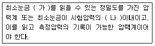
- 가 : 1.0 mmH2O, 나 : 1%
- 가 : 1.0 mmH2O, 나 : 5%
- 가 : 0.1 mmH2O, 나 : 1%
- 가 : 0.1 mmH2O, 나 : 5%
(정답률: 58%)
37. 다음은 수소이온농도(pH)-유리전극법에 관한 설명이다. ( )안에 옳은 내용은?
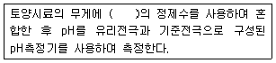
- 2배
- 3배
- 5배
- 10배
(정답률: 85%)
38. 시안분석(자외선/가시선 분광법)에 대한 설명으로 틀린 것은?
- 시안화합물을 측정할 때 방해물질들은 증류하면 대부분 제거된다.
- 잔류염소가 함유된 시료는 잔류염소 20mg 당 L-아스코르빈산(10%) 0.6mL 또는 아비산 나트륨 용액(10%) 0.7mL를 넣어 제거한다.
- 황화합물이 함유된 시료는 아세트산 아연용액(10%) 2mL를 넣어 제거한다.
- 다량의 지방성분을 함유한 시료는 pH 4이하로 조절한 후 시료의 약 2%에 해당하는 부피의 노말헥산 또는 클로로포름으로 추출하여 제거한다.
(정답률: 70%)
39. 다음은 총칙의 내용이다. ( )안에 옳은 내용은?
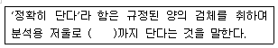
- 1.0mg
- 0.1mg
- 0.01mg
- 0.001mg
(정답률: 85%)
40. 토양 중 석유계총탄화수소(기체크로마토그래피) 분석을 위한 채취시료의 관리기준에 관한 내용으로 옳은 것은?
- 채취한 시료를 즉시 시험할 수 없을 경우 0℃~4℃냉암소에서 보존하고 7일 이내에 추출하여야 하고 시료채취일로부터 30일 이내에 분석하여야 한다.
- 채취한 시료를 즉시 시험할 수 없을 경우 0℃~4℃냉암소에서 보존하고 14일 이내에 추출하여야 하고 시료채취일로부터 40일 이내에 분석하여야 한다.
- 채취한 시료를 즉시 시험할 수 없을 경우 0℃~15℃냉암소에서 보존하고 7일 이내에 추출하여야 하고 시료채취일로부터 30일 이내에 분석하여야 한다.
- 채취한 시료를 즉시 시험할 수 없을 경우 0℃~15℃냉암소에서 보존하고 14일 이내에 추출하여야 하고 시료채취일로부터 40일 이내에 분석하여야 한다.
(정답률: 69%)
3과목: 토양 및 지하수 오염정화 기술
41. 투수성 반응벽체(PRB)의 공정원리에 관한 설명으로 틀린 것은?
- PRB는 원위치 오염방지 구조물이다.
- PRB는 오염지역 밖으로 지하수의 이동을 막는 것이므로 비용측면에서 효과적이다.
- PRB는 산성광산폐수에서 방사성동위원소까지 오염된 지하수에 포괄적으로 적용된다.
- PRB는 지중의 반응존(reactive zone)으로 오염물을 이동시키는 자연적인 지하수 흐름에 의존한다.
(정답률: 69%)
42. 자연저감기법(Natural Attenuation)의 영향인자 중 수리지질학적 인자와 가장 거리가 먼 것은?
- 동수 구배
- 토양입경의 분포
- 오염물질의 농도
- 지표수와 지하수의 관계
(정답률: 53%)
43. 유기오염물질로 오염된 사질 대수층이 있다. 수리전도도가 3.0×10-3cm/sec, 유효 공극율이 0.3, 수두구배가 0.01일 때 오염운의 평균 이동속도는? (단, 흡착 등에 의한 지연은 고려하지 않는다.)
- 10-3cm/sec
- 10-4cm/sec
- 10-5cm/sec
- 10-6cm/sec
(정답률: 62%)
44. 벤젠 40kg으로 오염된 토양을 원위치 생물학적 복원기술에 의해 정화하고자 한다. 다음의 조건에 의해 벤젠이 완전 분해되는데 필요한 산소를 과산화수소로 공급한다면 필요한 과산화수소의 양(kg)은? (단, 벤젠 C6H6, 과산화수소 H2O2, 2H2O2→2H2O+O2
- 143
- 184
- 226
- 262
(정답률: 64%)
45. Air Sparging 적용에 유리한 조건으로 틀린 것은?
- 토양의 종류 : 사질토, 균질토
- 지하수면까지의 깊이 : 1.5m 이상
- 오염물질의 호기성 생분해능 : 높음
- 오염물질의 용해도 : 높음
(정답률: 69%)
46. 토양 세정법(soil flushing)을 적용하는 경우, 화학적 첨가제로 사용하는 계면활성제에 관한 내용으로 틀린 것은?
- 계면활성제는 공기-물, 기름-물 등 다른 물질 사이에 끼어 들어가 두 물질 사이의 자유에너지를 낮추는 역할을 한다.
- 계면활성제는 친수성체의 성질에 따라 양이온성, 음이온성, 중성 및 양성으로 구분한다.
- 계면활성제는 농도가 어느 이상이면 더 이상 표면장력을 낮추지 않고 마이셀을 형성하기 시작한다.
- 마이셀이 형성됨에 따라 계면활성제 용액에 대한 오염물질의 용해도는 감소하게 된다.
(정답률: 67%)
47. 폐광산에서 유출되는 산성광산배수의 처리를 위한 기술로서 틀린 것은?
- SAPS(successive alkalinity producing system)
- 인공 소택지법(호기성, 혐기성)
- 산화ㆍ응집공법(ALD : alkalinity lime draining)
- DW(diversion well)
(정답률: 69%)
48. 오염된 지하수를 정화하기 위해 포화대 내에 공기를 주입하여 지하수를 폭기시킴으로써 휘발성 유기화합물질을 휘발시켜 제거하는 원위치 기술은?
- 에어스파징(air sparging)
- 에어워싱(air waching)
- 에어벤팅(air venting)
- 에어스트리핑(air steipping)
(정답률: 79%)
49. 식물을 이용하여 오염된 토양이나 지하수를 정화하는 기술을 직물정화법이라고 한다. 식물정화법에 대한 설명으로 틀린 것은?
- 식물은 필요한 무기영양분을 대부분은 이온형태로 뿌리를 통해서 흡수한다.
- 식물에 의한 추출에 적합한 식물들은 수확이 가능한 조직내에 고농도의 금속을 축적하고 이에 대한 내성이 있어야 한다.
- 방향족 탄화수소, 할로겐화 방향족 탄화수소, 유기인화합물 등의 오염물질은 식물에 의한 분해로 정화된다.
- 토양 내 알루미늄은 이온과 물 흡수력을 과잉 증진시켜 결국 독성으로 작용하게 된다.
(정답률: 38%)
50. 토양오염확산방지기술인 고형화와 안정화에 관한 설명으로 틀린 것은?
- 폐기물 표면적을 증가시켜 안정화속도를 빠르게 하는 장점이 있다.
- 일차적으로 폐기물의 유해성분의 유동성을 감소시키는 것을 목적으로 한다.
- 폐기물의 용해성이 감소하는 장점이 있다.
- 페기물의 취급이 용이해지는 장점이 있다.
(정답률: 77%)
51. 생물학적 처리방법 중에서 [오염토양 조건-처리방법-처리대상오염물]을 잘못 짝지은 것은? (단, 처리위치는 원위치 기준)
- 불포화 토양층 - biovntion - BTEX
- 불포화 토양층 - 바이오필터 - PAHs
- 포화 토양층 - 침투성 생물반응벽 - 생분해 가능한 유기오염물질
- 포화 토양층 - 자연정화법 - 유류, 염소계 유기화합물
(정답률: 75%)
52. Bioventing 공법의 영향인자에 관한 설명으로 틀린 것은?
- 일반적으로 사질토일 경우에 적절히 적용된다.
- 오염물 제거 깊이는 3~10m 범위이다.
- 일반적으로 최적 pH 범위는 약 6~8 정도이다.
- 균일한 처리가 가능하고 오염물질 확산의 우려가 없다.
(정답률: 75%)
53. 미생물 분해를 목적으로 하는 부분반응벽시스템(Funnel-and-gate system)에 가장 적합한 투수성 벽체 재료는?
- 0가 철
- Alum
- 굴 껍질
- 자갈
(정답률: 73%)
54. 식물정화법(phytoremediation)에 대한 설명으로 틀린 것은?
- 식물에 의한 추출로 토양을 정화할 때 대표적 식물종은 해바라기이다.
- 식물에 의한 안정화로 토양을 정화할 때 대표적 식물종을 포플러 나무이다.
- 식물에 의한 추출에 적합한 식물은 수확되지 않는 뿌리에 고농도 금속을 축적하고 내성이 있어야 한다.
- 식물에 의한 안정화는 풍화 및 침식 경로에 의한 오염원의 이동을 막아 인근의 지하수로 용출되는 것을 효과적으로 제어할 수 있다.
(정답률: 68%)
55. 오염부지의 복원을 위한 원위치와 탈위치 처리 조건에 대해 잘못 기술한 것은?
- 단기적 처리를 위해서는 원위치 기술이 적합하다.
- 처리 효율을 높이고자 할 경우 탈위치 기술이 적합하다.
- 오염 농도가 높은 경우에는 탈위치 기술이 적합하다.
- 처리량이 많은 경우에는 원위치 기술이 적합하다.
(정답률: 64%)
56. 오염토양의 조사 및 복원을 위하여 오염토양 내의 물질이동을 정확하게 파악하는 것이 필요한데 토양 내의 물질이동이론에 대한 설명으로 옳은 것은?
- 물의 흐름이론 : Darcy's law
열의 흐름이론 : Ohm's law
전기흐름이론 : Fourier's law
확산이론 : Fick's law - 물의 흐름이론 : Darcy's law
열의 흐름이론 : Fourier's law
전기흐름이론 : Ohm's law
확산이론 : Fick's law - 물의 흐름이론 : Darcy's law
열의 흐름이론 : Fourier's law
전기흐름이론 : Fick's law
확산이론 : Ohm's law - 물의 흐름이론 : Fourier's law
열의 흐름이론 : Fick's law
전기흐름이론 : Ohm's law
확산이론 : Darcy's law
(정답률: 81%)
57. 전기동력학적 공정효율을 높이기 위한 방법으로 틀린 것은?
- 음극 쪽에서 발생하는 중금속의 수산화물 침전물 형성을 방지하고 침전물의 용해도를 증가시키기 위해 음극 전해질 용액에 아세트산과 같은 화학물질을 주입함
- 오염물질의 이동도를 증가시키기 위해 pH와 제타전위를 조절하고 탈착반응을 촉진시키며 전기삼추유량을 증가시키기 위해 양극과 음극 전해질 용액의 화학조절을 실시함
- 오염물질의 흡착능력을 향상시키기 위해 이온교환능이 높은 벤토나이트, 몬모릴로나이트와 같은 점토광물의 함량을 증가시킴
- 토양입자와 경쟁하며 중금속 오염물질에 대해 용해성 착화합물을 형성할 수 있는 암모니아, citrate, EDTA 등과 같은 화학제를 투여함
(정답률: 53%)
58. 생물학적 통기법을 효과적으로 적용하기 위해서는 현장에서의 산소소모율을 조사한다. 다음 중 평균산소 소모율(% O2/day)을 구하는 식의 인자와 가장 거리가 먼 것은?
- 주입공기유량
- 배가스 중에 산소농도
- 토양 체적
- 토양 투수계수
(정답률: 77%)
59. 중금속으로 오염된 pH가 낮은 산용액을 이용하여, 중금속을 토양으로부터 분리시켜 처리라는 토양복원 방법은?
- 토양유리화방법(vitrification)
- 토양세척법(Soil washing)
- 토양경작법(Soil landfaeming)
- 토양증기추출법(Soil vapor extraction)
(정답률: 55%)
60. 토양증기추출 시스템을 240m3/min의 유량으로 운전할 때, 배출가스를 처리하기 위하여 요구되는 활성탄 흡착탄의 단면적은? (단, 활성탄 흡착탑의 적정 통과 유속은 1m/sec)
- 1m2
- 2m2
- 3m2
- 4m2
(정답률: 65%)
4과목: 토양 및 지하수 환경관계법규
61. 다음은 지하수오염방지시설의 설치기준 중 상부보호공을 설치하는 지하수오염발지시설의 세부 설치기준이다. ( )안에 맞는 것은?
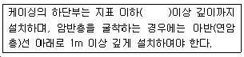
- 10m
- 5m
- 3m
- 2m
(정답률: 68%)
62. 토양정화업의 등록요건 중 시설기준으로 옳은 것은? (단, 반입정화시설은 오염토양을 반입하여 정화하는 경우만 해당하며, 반입정화시설의 바닥의 포장, 지분설치 및 오염방지시설 등 세부설치기준은 환경부장관이 정하여 고시한다.)
- 반입정화시설 : 정화시설 200m2 이상, 보관시설 200m2이상
- 반입정화시설 : 정화시설 300m2 이상, 보관시설 300m2이상
- 반입정화시설 : 정화시설 400m2 이상, 보관시설 400m2이상
- 반입정화시설 : 정화시설 500m2 이상, 보관시설 500m2이상
(정답률: 80%)
63. 지하수보전구역안에서 대통령령이 정하는 규모이상의 지하수를 개발ㆍ이용하는 행위를 하고자 하는 자는 시장ㆍ군수의 허가를 받아야 한다. 여기서 “대통령령이 정하는 규모이상”이 의미하는 것은?
- 1일 양수능력이 30톤 이상인 경우
- 1일 양수능력이 50톤 이상인 경우
- 1일 양수능력이 70톤 이상인 경우
- 1일 양수능력이 100톤 이상인 경우
(정답률: 65%)
64. 시ㆍ도지사가 오염원인자에게 토양오염방지를 위한 조치를 명령할 때는 토양오염물질 및 시설의 종류ㆍ규모 등을 감안하여 얼마 기간의 범위 안에서 그 이행 기간을 정하여야 하는가? (단, 연장기간은 고려하지 않음)
- 6월
- 1년
- 2년
- 3년
(정답률: 57%)
65. 토양보전대책지역 지정표지판에 관한 설명으로 틀린 것은?
- 지정목적을 표기한다.
- 토양보전대책지역 내역(주소, 면적, 약도)을 표기한다.
- 표지판의 규격은 가로 3미터, 세로 2미터, 높이 1.5미터 이상으로 하여야 한다.
- 흰색바탕의 표지판에 검정색 페인트를 사용하여 표기하여야 한다.
(정답률: 79%)
66. 지하수에 관한 조사업무를 대행하는 지하수조사 전문기관이 작성하는 지하수조사계획서에 포함되는 사항과 가장 거리가 먼 것은?
- 원상복구계획
- 시추계획
- 조사내용
- 조사지역
(정답률: 50%)
67. 다음 중 토양정화업(변경)등록 신청서의 처리기관장과 등록 및 변경등록 시 처리기간으로 가장 적합한 것은?
- 시ㆍ도지사, 등록 7일, 변경등록 10일
- 시ㆍ도지사, 등록 10, 변경등록 7
- 지방환경청장, 등록 7일, 변경등록 10일
- 지방환경청장, 등록 10, 변경등록 7일
(정답률: 58%)
68. 다음 중 지하수법상 지하수보전구역내 지하수오염유발시설에 해당하지 않는 것은?
- 토양환경보전법시행규칙에 따른 특정토양오염관리대상시설
- 폐기물관리법에 따른 소각시설
- 폐기물관리법시행령에 따른 매립시설
- 수질 및 수생태계 보전에 관한 법률 시행규칙에 따른 폐수배출시설
(정답률: 66%)
69. 지하수의 수질기준에서 일반오염물질에 해당하는 항목이 아닌 것은?
- 수소이온동도
- 질산성질소
- 염소이온
- 아연
(정답률: 70%)
70. 다음은 특정토양오염관리대상시설인 석유류의 제조 및 저장시설 대상범위에 관한 내용이다. ( )안에 옳은 것은?
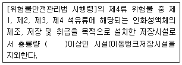
- 1만리터
- 2만리터
- 3만리터
- 4만리터
(정답률: 44%)
71. 다음은 자연적인 원인에 의한 토양오염임을 인증하는 대통령령으로 정하는 방법이다. ( )안에 내용으로 옳은 것은?
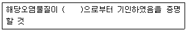
- 대상 지역의변성
- 대상 지역의 기후변동
- 대상 부지의 지각변동
- 대상 부지의 기반암
(정답률: 80%)
72. 지하수의 체계적인 개발ㆍ이용 및 효율적인 보전ㆍ관리를 위하여 지하수관리기본계획의 수립시 포함되어야 할 사항 중 거리가 먼 것은?
- 지하수의 이용실태
- 지하수의 보전계획
- 지하수의 조사에 관한 투자계획
- 지하수의 수질관리 및 정화계획
(정답률: 68%)
73. 다음 오염지하수 정화계획의 승인 절차에 대한 설명 중 ( )안에 들어갈 말을 순서대로 옳게 나열한 것은?
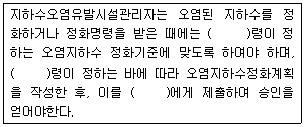
- 환경부 - 대통령 - 시장ㆍ군수ㆍ구청장
- 환경부 - 대통령 - 환경부장관
- 대통령 - 환경부 - 환경부장관
- 대통령 - 환경부 - 시장ㆍ군수ㆍ구청장
(정답률: 61%)
74. 지하수의 개발ㆍ이용에 관한 허가ㆍ인가 등을 받거나 신고를 한 자는 그 공사의 착공일전까지 이행보증금을 현금 또는 국토교통부령이 정하는 보증서ㆍ유가증권 등으로 예치하여야 한다. 이 때 이행보증금의 예치기간은?(오류 신고가 접수된 문제입니다. 반드시 정답과 해설을 확인하시기 바랍니다.)
- 공사의 착공일부터 1년
- 공사의 착공일부터 2년
- 공사의 착공일부터 3년
- 공사의 착공일부터 5년
(정답률: 53%)
75. 토양정화업의 등록요건 중 장비목록에서 시료채취기에 대한 기준으로 옳은 것은?
- 시료채취기 2대(깊이 3m 이상 시료채취가 가능할 것)
- 시료채취기 1대(깊이 3m 이상 시료채취가 가능할 것)
- 시료채취기 2대(깊이 6m 이상 시료채취가 가능할 것)
- 시료채취기 1대(깊이 6m 이상 시료채취가 가능할 것)
(정답률: 73%)
76. 토양관련전문기관 중 토양오염조사기관이 수행하는 업무가 아닌 것은?
- 토양정밀조사
- 오염토양 개선사업의 지도ㆍ감독
- 오염물질 누출검사결과의 검증
- 토양오염도검사
(정답률: 65%)
77. 다음은 위해성평가 대상지역의 관리에 관한 내용이다. ( )안에 옳은 내용은?
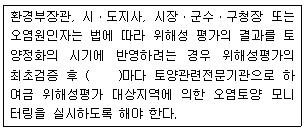
- 매년
- 2년
- 3년
- 4년
(정답률: 49%)
78. 토양환경보전법상 용어의 정의로 옳지 않은 것은?
- 토양오염물질 : 토양오염의 원인이 되는 물질로서 환경부령으로 정하는 것을 말한다.
- 특정토양오염관리대상시설 : 토양을 현저하게 오염시킬 우려가 있는 토양오염관리대상시설로서 환경부령으로 정하는 것을 말한다.
- 토양오염 : 사업황동이나 그 밖의 사람의 활동에 의하여 토양이 오염되는 것으로서 사람의 건강ㆍ재산이나 환경에 피해를 주는 상태를 말한다.
- 토양처리업 : 토양의 적절한 방법으로 정화 처리하는 업을 말한다.
(정답률: 74%)
79. 토양환경평가에 관한 내용으로 옳지 않은 것은?
- 토양환경평가의 정차 및 방법의 구체적인 사항은 환경부장관이 정하여 고시한다.
- 개황조사 : 시료의 채취 및 분석을 통한 토양오염의 정도와 밤위 조사
- 토양환경평가는 기초조사, 개황조사, 정밀조사의 순서로 실시한다.
- 기초조사 : 자료조사, 현장조사 등을 통한 토양오염 개연성 여부 조사
(정답률: 85%)
80. 다음 중 토양오염검사수수료가 가장 비싼 항목은?
- 6가 크롬
- 유기인
- 페놀류
- 수은
(정답률: 57%)